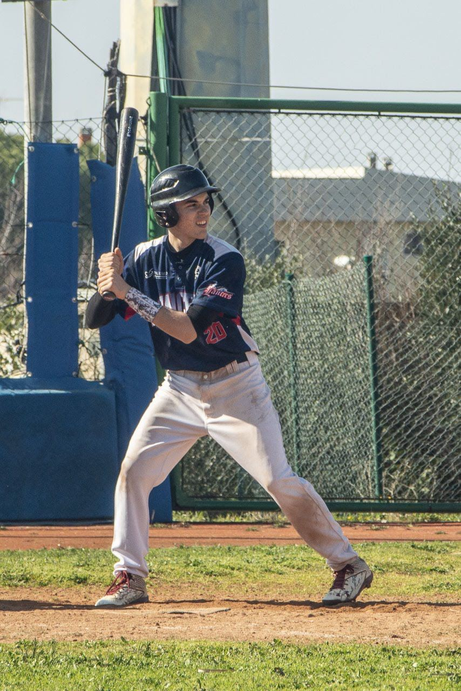
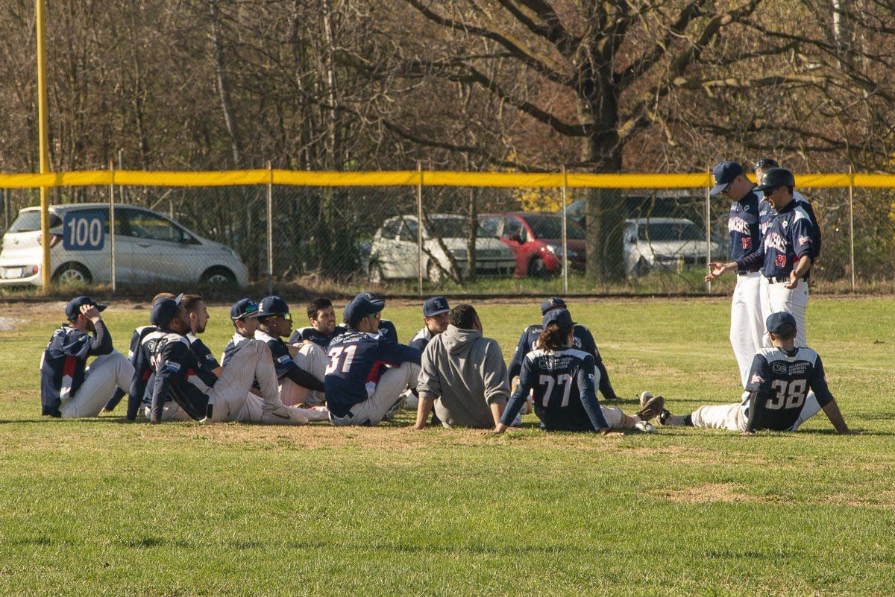

Quarta uscita di pre campionato dei Lancers Baseball che c’entrano l’obiettivo della giornata: giocare un buon baseball mettendo in campo aggressività e tecnica.
A questo si aggiunge la vittoria del torneo organizzato dalla società amica Yankees di San Giovanni in Persiceto alla quale vanno i ringraziamenti per l’invito ed i complimenti per la bella manifestazione; in concomitanza al torneo senior, infatti, si svolgeva sul campo ridotto un torneo under 12.
Il bel tempo ha fatto poi da cornice ad una gran bella giornata di baseball, ricca di giocatori, tecnici, arbitri e appassionati.
Nella gara del mattino i padroni di casa riescono a rimontare e vincere la sfida con i pari categoria (A2) dei Bologna Athletics, squadra che i Lancers si troveranno ad affrontare nel primo incontro.
Partita subito nelle mani dei Lancers che segnano per primi e mantengono saldo il vantaggio, allungando nelle riprese successive.
Partente Menoni che deve ancora rispettare un limite di lanci per il pieno recupero, Degl’Innocenti rileva perfettamente il compagno eliminando ogni possibilità di rimonta da parte degli avversari.
Buona partita di tutto il roster che si muove perfettamente in difesa e finalmente trova continuità in battuta, punteggio finale 7 a 2.
La terza ed ultima partita della giornata che vale il primo posto inizia subito dopo, gli Yankees schierano la stella del mercato invernale sul monte Marino Salas (ex MLB con i Pirates).
Nonostante la velocità del pitcher dominicano tocchi le 87 mph i Lancers fanno dei buoni turni in battuta obbligando il pitcher a più lanci del necessario, la gara viene poi sbloccata da Pasquini che con un bel doppio tra centro e destra spinge a casa Parrini.
Sul monte Perez contiene senza particolari problemi le mazze avversarie supportato ancora da una difesa pronta ed attenta.

Lo staff tecnico si dice molto soddisfatto della giornata che fa ben sperare per i prossimi impegni; la strada da percorrere è ancora tanta ma ieri si è visto il miglioramento che i tecnici si aspettavano dalla propria squadra.
Prossimo appuntamento Sabato 30 Marzo allo stadio Jannella di Grosseto per un doppio incontro, pomeriggio e sera, con il Jolly Roger che anche quest’anno affronterà il campionato di A2.